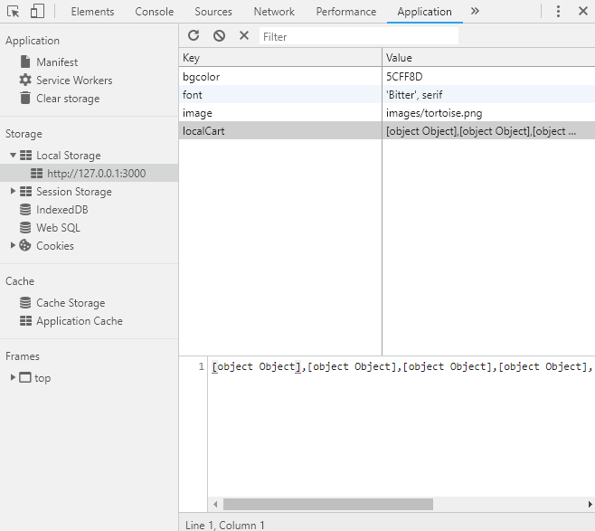

Local and session storage can be used (providing broser compatibility) to store key:value data that can exist
longer than a standard javascript object. Session storage will exists so long as the browser remains open
and will be used on page reloads. Local Storage exists on the local machine and will persist even if
the browser is closed and re-opened.
Due to browser compatibility and/or privacy settings it is important to test that storage is available and allowed
before puttint it to use. A function to test this is available at
https://developer.mozilla.org/en-US/docs/Web/API/Web_Storage_API/Using_the_Web_Storage_API
localStorage.getItem('keyName','keyValue') is used to retrieve values from storage. Those values are stored in variables (in this case)
and can then be used to update the webpage with the stored value.
localStorage.setItem('keyName','keyValue') is used to create new data items and to update data items if they already exist.
*Note that sessionStorage can be used in place of localStorage when desired.
Whenever there is a change to local storage a storage event is triggered (this is not true for session storage).
This can be used by other webpages in the same domain in order to sync changes that are made. Pages on other domains
cannot access the same storage objects.
Two additional storage methods worth knowing are as follows:
Storage.removeItem() takes a key value and removes it from the storage object.
Storage.clear() takes no arguements and completely empties the entire storage object for the domain.
I also want to note that in Google Chrome (and likely other) developer tools you can view local storage from a website.
An image below shows an example.
